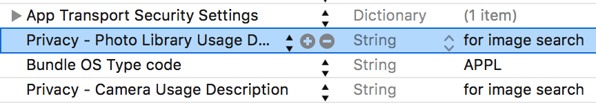
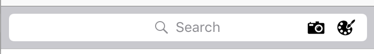

View on GitHub
View on GitHub ViSearchWidgets Reference
ViSearchWidgets Reference
ViSearch Swift Widgets SDK

- 1. Overview
- 2. Requirements
- 3. Setup
- 4. Install the SDK
- 5. Configure the SDK
- 6. Solution Widgets
- 7. Customization
- 8. Implement ViSenze Analytics
1. Overview
Search and monetize your product images with our effective, easy-to-use, and customizable SDK widgets.
We have launched four solutions that would be fit into your various use cases.
- Find Similar: Automatically find visually similar items from your inventory with a simple click
- You May Also Like: Recommend products customers may like using visual recognition and custom rules
- Search by Image: Search for matching or similar items from your database with built-in automated object recognition
- Search by Color: Search and discover products by selecting from a vast color spectrum
API documentation: https://visenze.github.io/visearch-widget-swift/
To understand quickly what our SDKs offer out of the box, please follow instructions in section 3 and then jump to section 4.3 to run the demo.
2. Requirements
- iOS 8.0+
- Xcode 8.1+
- Swift 3.0+
3. Setup
3.1 Setup your ViSenze account
In order to use our widgets, please setup your ViSenze account. Please refer to our developer documentation for set-up instructions.
To use the mobile widgets, you will need to get the API keys (access & secret key) with search-only permission.
3.2 Upload your datafeed
For testing, you will need to upload your datafeed in ViSenze dashboard and configure schema fields . For widgets integration, the schema fields requirements are as below:
| Meta-data | Schema | Type | Required | Searchable | Description | Example |
|---|---|---|---|---|---|---|
| Image Id | im_name | string | Yes | Yes | Unique identifier for the image. Generated automatically in ViSenze dashboard. | red-polka-dress.jpg, 2720f503-a0d9-4516-8803-19052fbf343c |
| Image URL | im_url | string | Yes | No | URL for product image. Generated automatically in ViSenze dashboard. | http://somesite.com/abc.jpg |
| Mobile Image URL | custom | string | No | No | Mobile friendly image url for faster loading in mobile app. If this is not provided, im_url will be used to display product image | http://somesite.com/small-img.png |
| Title | custom | string | Yes | Optional | Product title which will appear below product image | Black dress |
| Description | custom | text | No | Optional | Product description which may appear in product detail page | Black dress |
| Brand | custom | string | No | Yes | Optional field for displaying in the product card. Can be used for filtering. | Nike, Adidas |
| Category | custom | string | No | Yes | Product category. Can be used for filtering. | Dress, Top, Eyewear, Watch , etc |
| Price | custom | float/int | Yes | Yes | Product original retail price. Can be used for ranged filtering | 49.99 |
| Discount Price | custom | float/int | No | Yes | Discount product price. Can be used for ranged filtering | 40.99 |
{kind=link}
{kind=link}
4. Install the SDK
4.1 CocoaPods
CocoaPods is a dependency manager for Cocoa projects. You can install it with the following command:
$ sudo gem install cocoapods
CocoaPods 1.1.0+ is required to build ViSearchWidgets.
Go to your Xcode project directory to create an empty Podfile:
pod init
To integrate ViSearchWidgets into your Xcode project using CocoaPods, specify it in your Podfile:
source 'https://github.com/CocoaPods/Specs.git'
platform :ios, '10.0'
use_frameworks!
target '<Your Target Name>' do
pod 'ViSearchWidgets', '~> 0.1'
end
You should change version 0.1 to the latest version of ViSearchWidgets. The version numbers can be viewed under the current Github project tags.
Then, run the following command:
$ pod install
4.2 Carthage
Carthage is a decentralized dependency manager that builds your dependencies and provides you with binary frameworks.
You can install Carthage with Homebrew using the following command:
$ brew update
$ brew install carthage
Alternately, you can download and run the Carthage.pkg file for the latest release.
To integrate ViSearchWidgets into your Xcode project using Carthage:
- Create a
Cartfile:
github "visenze/visearch-widget-swift" ~> 0.1
You should change version 0.1 to the latest version of ViSearchWidgets. The version numbers can be viewed under the current Github project tags.
- Run
carthage update --platform iOS --no-use-binaries
This will fetch dependencies (Kingfisher, LayoutKit, visearch-sdk-swift, visearch-widget-swift) into Carthage/Checkouts folder, then build the framework.
- On your application target’s “General” settings tab, in the
Embedded Binarysection, drag and drop the following frameworks from theCarthage/Build/iOSfolder:
- Kingfisher.framework
- LayoutKit.framework
- ViSearchSDK.framework
- ViSearchWidgets.framework

Click on Build Phases
tab, verify that the Framework Search Path
includes $(PROJECT_DIR)/Carthage/Build/iOS
Add the following frameworks to
Linked Frameworks and Libraries
section: MediaPlayer, Photos, AVFoundation.On your application target’s “Build Phases” settings tab, click the “+” icon and choose “New Run Script Phase”. Create a Run Script in which you specify your shell (ex:
bin/sh), add the following contents to the script area below the shell:
/usr/local/bin/carthage copy-frameworks
and add the paths to the frameworks you want to use under Input Files, e.g.:
$(SRCROOT)/Carthage/Build/iOS/Kingfisher.framework
$(SRCROOT)/Carthage/Build/iOS/LayoutKit.framework
$(SRCROOT)/Carthage/Build/iOS/ViSearchSDK.framework
$(SRCROOT)/Carthage/Build/iOS/ViSearchWidgets.framework

4.3 Run Demo App
The source code of the Demo application is under the WidgetsExample folder. Please open the WidgetsExample.xcodeproj and configure the API keys/ schema mapping to run the demo.
- Configure API keys:
Please refer to section 3.1 for instructions to get the API keys. You can enter the search-only access and secret keys into the ViApiKeys.plist file.

- The demo app is built with Carthage. Please download and run the
Carthage.pkgfile for the latest release. After Carthage installation, you will need to run the following command at source directory:
carthage update --platform iOS --no-use-binaries
- Configure schema mapping
As mentioned in section 3.2 , you will need to upload your datafeed and configure the schema fields. The fields which hold product’s information can then be displayed in the widgets via the Product Card UI component. Please see the below screenshot for example.

You will need edit the SampleData.plist (the file was below ViApiKeys.plist in the Configure API keys section screenshot) to configure the schema mapping for your sample data feed.

heading_schema_mapping: refers to the schema mapping for theHeadingfield inProduct Cardcomponent. In the screenshot, it was used to display the product title (the schema field isim_titlewhich is a custom field in the feed).label_schema_mapping: refers to the schema mapping for theLabelfield inProduct Cardcomponent. In the screenshot, it was used to display the product brand.price_schema_mapping: refers to the schema mapping for thePricefield inProduct Cardcomponent. In the screenshot, it was used to display the product original retail price.discount_price_schema_mapping: refers to the schema mapping for theDiscount Pricefield inProduct Cardcomponent. In the screenshot, it was used to display the product discount price. This is optional and may not be applicable for your data feed.color: sample color code used forSearch by Color
widget demo.find_similar_im_name: sample im_name used forFind Similar
widget demo. You can browse the product images in ViSenze dashboard and used any existing im_name to test.you_may_like_im_name: sample im_name used forYou May Also Like
widget demo. You can browse the product images in ViSenze dashboard and used any existing im_name to test.filterItems: configure the types of fitler used in demo app. Two types of filters are supported (Category and Range filters).- Configure scheme: At the final step, you will need to change the Running Scheme to
WidgetsExample
. You are now ready to run the demo app.

5. Configure the SDK
5.1 Api Keys
ViSearch must be initialized with an accessKey/secretKey pair before it can be used. Please refer to section 3.1 on how to obtain the keys .You can do this initialization once in AppDelegate class.
import ViSearchSDK
import ViSearchWidgets
...
// using default ViSearch API client which will connect to Visenze's server
ViSearch.sharedInstance.setup(accessKey: "YOUR_ACCESS_KEY", secret: "YOUR_SECRET_KEY")
5.2 App Permission
App Transport Security Setting : For loading of product images, you will need to configure the
App Transport Security Settings
option in your project’sInfo.plist. Please see this link and suggestions for more information. If your product images URLs come from various unknown domains, you can just setArbitrary Load
option toYes
.Add Privacy Usage Description :
iOS 10 now requires user permission to access camera and photo library. To use Search by Image
solution, please add description for NSCameraUsageDescription, NSPhotoLibraryUsageDescription for accessing camera/photo library respectively in your Info.plist. More details can be found here.

6. Solution Widgets
6.0 Common Widget Configuration
All of our widgets (constructed as view controller sub-classes of ViBaseSearchViewController ) require the following common configuration steps.
6.0.1 Product Card Schema Mapping
As mentioned in section 3.2 , you will need to upload your datafeed and configure the schema fields. The fields which hold product’s information can then be displayed in the widgets via the Product Card UI component. Please see the below screenshot for example.
You can then configure the widgets (which are view controllers) as below:
// create the widgets as view controller
...
...
// configure schema mapping for product card UI component in the widget
controller.schemaMapping.heading = ... // mapping for heading element e.g. for displaying product title
controller.schemaMapping.label = ... // mapping for label element e.g. for displaying product brand
controller.schemaMapping.price = ... // mapping for price element e.g. for displaying product original retail price
controller.schemaMapping.discountPrice = ... // mapping for discount price element e.g. for displaying product discount price. May not be available in product feed
controller.schemaMapping.productUrl = ... // mapping for product image URL. default to "im_url" schema field.
6.0.2 Product Card Display Setting
You can also configure various setting for the product card.
// configure product image size and content mode
controller.imageConfig.size = CGSize(width: imageWidth, height: imageHeight )
controller.imageConfig.contentMode = .scaleAspectFill
// configure product card box size
controller.itemSize = ...
// add border to product card
controller.productCardBorderColor = UIColor.lightGray
controller.productCardBorderWidth = 0.7
// add only bottom and right borders for product card
controller.productBorderStyles = [.RIGHT , .BOTTOM]
// display a strike through text through the original retail price (if discount price is available)
controller.priceConfig.isStrikeThrough = true
6.0.3 Common Search Settings
// create search params (depending on the widget)
// for example, in Find Similar, You May Also Like, parameters are constructed by providing im_name:
// let params = ViSearchParams(imName: im_name)
// set various search settings
// limit search to return 16 most similar results
params.limit = 16
// retrieve additional meta-data (in addition to what was mentioned in schema mapping)
params.fl = ["category"]
// set search paramters
controller.params = params
For advanced configuration of search parameters refer to this link .
6.1 Find Similar
Visually similar products can be actively searched by the user on the product listing or product detail screen. Our algorithm assigns appropriate weights to different attributes to determine a final similarity score, and product results are displayed in order of the score. This solution provides an opportunity for shoppers to discover other relevant results based on visual similarity.

The products are displayed in a grid.
Below is sample code for using Find Similar
widget. Please read section 6.0 on important configuration steps.
import ViSearchSDK
import ViSearchWidgets
...
// create search parameter which will search for similar products to sample_im_name.jpg
// you can trigger the search from a "Similar" button from product details screen
// Alternately, the "Find Similar" search can be triggered in the search results by clicking on "Find Similar" button on a product card (located at bottom right)
if let params = ViSearchParams(imName: "sample_im_name.jpg") {
// 1. create Find Similar widget
let similarController = ViFindSimilarViewController()
// configure max of 16 most similar results to return
params.limit = 16
// 2. set search parameters
similarController.searchParams = params
// 3. configure schema mapping (refer to section 6.0.1)
// Assumption: your schema data feed include "im_title", "brand", "price" fields which store data for product title, brand and current price
similarController.schemaMapping.heading = "im_title"
similarController.schemaMapping.label = "brand"
similarController.schemaMapping.price = "price"
// 4. configure product image size and content mode
let containerWidth = self.view.bounds.width
let imageWidth = containerWidth / 2.5
let imageHeight = imageWidth * 1.2
similarController.imageConfig.size = CGSize(width: imageWidth, height: imageHeight )
// configure image content mode
similarController.imageConfig.contentMode = .scaleAspectFill
// 5. configure products to display in 2 columns
similarController.itemSize = similarController.estimateItemSize(numOfColumns: 2, containerWidth: containerWidth)
// 6. misc setting (Optional)
// configure border color if necessary
similarController.productCardBorderColor = UIColor.lightGray
similarController.productCardBorderWidth = 0.7
// configure spacing between product cards on the same row i.e. the column spacing
similarController.itemSpacing = 0
// configure spacing between the rows
similarController.rowSpacing = 0
// 7. configure delegate to listen for various events such as when user clicks on Action button
similarController.delegate = self
// 8. open widget with navigation controller
self.navigationController?.pushViewController(similarController, animated: true)
// 9. trigger web service to ViSenze server
similarController.refreshData()
}
Important API docs:
- ViFindSimilarViewController : Find Similar widget
- ViGridSearchViewController : Present search results in a grid (collection view)
- ViBaseSearchViewController : Base class for all widgets
- ViSearchViewControllerDelegate : delegate for widget customization
6.2 You May Also Like
This solution showcases recommended products on the product detail screen. You can apply custom recommendation rules for each application based on your customer demographic or other metadata such as brand, price, color etc. Our algorithm will then create a similarity score and rank products in order of score. This solution provides an opportunity for you to promote more products based on visual similarity and other relevant recommendation rules.

The products are displayed in a horizontal scroll view.
Below is sample code for using You May Also Like
widget. Please read section 6.0 on important configuration steps. The widget (ViRecommendationViewController) should be used in the detail screen as a child view controller. There are 2 ways to present a child view controller.
- Present ViRecommendationViewController programatically as child view controller:
import ViSearchSDK
import ViSearchWidgets
...
// create search parameter which will search for similar products to sample_im_name.jpg
if let params = ViSearchParams(imName: "sample_im_name.jpg") {
// 1. create You May Also Like widget
let controller = ViRecommendationViewController()
// configure max of 10 most similar results to return
params.limit = 10
// 2. set search parameters
controller.searchParams = params
// 3. configure schema mapping (refer to section 6.0.1)
// Assumption: your schema data feed include "im_title", "brand", "price" fields which store data for product title, brand and current price
controller.schemaMapping.heading = "im_title"
controller.schemaMapping.label = "brand"
controller.schemaMapping.price = "price"
// 4. configure product image size and content mode
let containerWidth = self.view.bounds.width
// this will let 2.5 images appear on screen within containerWidth viewbox
let imageWidth = controller.estimateItemWidth(2.5, containerWidth: containerWidth)
let imageHeight = imageWidth * 1.2
controller.imageConfig.size = CGSize(width: imageWidth, height: imageHeight )
// configure image content mode
controller.imageConfig.contentMode = .scaleAspectFill
// 5. configure product card box size
// IMPORTANT: this must be called last after schema mapping configuration as we calculate the item size based on whether a field is available
// e.g. if label is nil in the mapping, then it will not be included in the height calculation of product card
// the product card height is dynamic and will depend on schema mapping
// the product card width is set to image width
controller.itemSize = controller.estimateItemSize()
// 6. misc setting (Optional)
// configure left spacing
controller.paddingLeft = 8.0
// configure border color if necessary
controller.productCardBorderColor = UIColor.lightGray
controller.productCardBorderWidth = 0.7
// configure spacing between product cards on the same row i.e. the column spacing
controller.itemSpacing = 0
// 7. configure delegate to listen for various events such as when user clicks on Action button
controller.delegate = self
// 8a. if you are presenting this view programmatically i.e. not from storyboard , you will need to add the following code to present as view controller
// set the frame and call necessary methods in current view controller
controller.view.frame = CGRect(x: 0, y: 320, width: self.view.bounds.width, height: controller.itemSize.height )
self.addChildViewController(controller)
self.view.addSubview(controller.view)
controller.didMove(toParentViewController: self)
// 9. trigger web service to ViSenze server
controller.refreshData()
}
- Present child view controller from storyboard:
You will need to drag in a Container view with an embedded segue within the view controller. Instructions can be found here and also in the WidgetsExample demo.
Set the child controller class as ViRecommendationViewController in Interface Builder under ViSearchWidgets module.
Then you can set up the controller within the prepare method as below:
override func prepare(for segue: UIStoryboardSegue, sender: Any?) {
if segue.identifier == "yourEmbedSegueIdentifier" {
let controller = segue.destination as! ViRecommendationViewController
if let params = ViSearchParams(imName: "sample_im_name.jpg") {
//1. configure max of 10 most similar results to return
params.limit = 10
// 2. set search parameters
controller.searchParams = params
// 3. configure schema mapping (refer to section 6.0.1)
// Assumption: your schema data feed include "im_title", "brand", "price" fields which store data for product title, brand and current price
controller.schemaMapping.heading = "im_title"
controller.schemaMapping.label = "brand"
controller.schemaMapping.price = "price"
// 4. configure product image size and content mode
let containerWidth = self.view.bounds.width
// this will let 2.5 images appear on screen within containerWidth viewbox
let imageWidth = controller.estimateItemWidth(2.5, containerWidth: containerWidth)
let imageHeight = imageWidth * 1.2
controller.imageConfig.size = CGSize(width: imageWidth, height: imageHeight )
// configure image content mode
controller.imageConfig.contentMode = .scaleAspectFill
// 5. configure product card box size
// IMPORTANT: this must be called last after schema mapping configuration as we calculate the item size based on whether a field is available
// e.g. if label is nil in the mapping, then it will not be included in the height calculation of product card
// the product card height is dynamic and will depend on schema mapping
// the product card width is set to image width
controller.itemSize = controller.estimateItemSize()
// 6. misc setting (Optional)
// configure left spacing
controller.paddingLeft = 8.0
// configure border color if necessary
controller.productCardBorderColor = UIColor.lightGray
controller.productCardBorderWidth = 0.7
// configure spacing between product cards on the same row i.e. the column spacing
controller.itemSpacing = 8
// 7. configure delegate to listen for various events such as when user clicks on Action button
controller.delegate = self
// 8. trigger web service to ViSenze server
controller.refreshData()
}
}
}
Important API docs:
- ViRecommendationViewController : You May Also Like widget
- ViHorizontalSearchViewController : Present search results in a horizontall scroll view (collection view)
- ViBaseSearchViewController : Base class for all widgets
- ViSearchViewControllerDelegate : delegate for widget customization
6.3 Search by Image
Shoppers can snap or upload a photo of the product they are looking for, find the same or similar options across price points, brands etc., and order the product that best meets their needs. The solution provides an innovative and easy way for shoppers to find items they want without needing keywords.

The products are displayed in a grid.
Below is sample code for using Search by Image
widget. Please read section 6.0 on important configuration steps and section 5.2 on important app permissions.
import ViSearchSDK
import ViSearchWidgets
...
// the entry point for Search by Image is to open a camera to take photo
// 1. we use CameraViewController for photo taking / select photo
let cameraViewController = CameraViewController(croppingEnabled: false, allowsLibraryAccess: true) { [weak self] image, asset in
// user cancel photo taking
if( image == nil) {
self?.dismiss(animated: false, completion: nil)
return
}
// 2. create the Search by Image widget and save recent photo
let controller = ViSearchImageViewController()
// save recent photo asset (which can be a recent taken photo from camera)
// the asset can also be from the user's photo library
controller.asset = asset
// create search parameter
let params = ViUploadSearchParams(image: image!)
// configure max of 16 most similar results to return
params.limit = 16
controller.searchParams = params
// enable cropping and select photo from library
controller.croppingEnabled = true
controller.allowsLibraryAccess = true
// 3. configure schema mapping (refer to section 6.0.1)
// Assumption: your schema data feed include "im_title", "brand", "price" fields which store data for product title, brand and current price
controller.schemaMapping.heading = "im_title"
controller.schemaMapping.label = "brand"
controller.schemaMapping.price = "price"
// 4. configure product image size and content mode
let containerWidth = self.view.bounds.width
let imageWidth = containerWidth / 2.5
let imageHeight = imageWidth * 1.2
controller.imageConfig.size = CGSize(width: imageWidth, height: imageHeight )
// configure image content mode
controller.imageConfig.contentMode = .scaleAspectFill
// 5. configure products to display in 2 columns
controller.itemSize = similarController.estimateItemSize(numOfColumns: 2, containerWidth: containerWidth)
// 6. misc setting (Optional)
// configure border color if necessary
controller.productCardBorderColor = UIColor.lightGray
controller.productCardBorderWidth = 0.7
// configure spacing between product cards on the same row i.e. the column spacing
controller.itemSpacing = 0
// configure spacing between the rows
controller.rowSpacing = 0
// 7. configure delegate to listen for various events such as when user clicks on Action button
controller.delegate = self
// 8. open widget with navigation controller
self.navigationController?.pushViewController(similarController, animated: true)
// 9. trigger web service to ViSenze server
controller.refreshData()
self?.dismiss(animated: false, completion: nil)
}
// present the camera to take photo or select from library
present(cameraViewController, animated: true, completion: nil)
You can enable/disable cropping, photo library access by setting the following properties:
// if you want to enable cropping immediately after taking photo and before search
// just set croppingEnabled to true for CameraViewController
// in the widget demo, search results are displayed immediately after taking from camera. Cropping is only done later by clicking on the crop button next to the query image
let cameraViewController = CameraViewController(croppingEnabled: false, allowsLibraryAccess: true) ...
// enable cropping and select photo from library
controller.croppingEnabled = true
controller.allowsLibraryAccess = true
Important API docs:
- ViSearchImageViewController : Search by Image widget
- ViGridSearchViewController : display search results in a grid (collection view)
- ViBaseSearchViewController : Base class for all widgets
- ViSearchViewControllerDelegate : delegate for widget customization
- CameraViewController : displaying the camera view for photo taking/selection from photo library
- ConfirmViewController : confirm controller for keeping/discarding the taken/selected photo. Cropping is done here.
6.4 Search by Color
Shoppers can search your entire indexed catalogue of products for an item with a particular color and then narrow down the results by attributes or fields such as category, brand, price, etc. Our algorithm can search the catalogue by a set of pre-selected colors from a color palette or a vast spectrum of colors.

The products are displayed in a grid.
Below is sample code for using Search by Color
widget. Please read section 6.0 on important configuration steps.
import ViSearchSDK
import ViSearchWidgets
...
// create search parameter with color code 00ff00
if let params = ViColorSearchParams(color: "00ff00") {
// 1. create controller
let controller = ViColorSearchViewController()
// configure max of 16 most similar results to return
params.limit = 16
// 2. set search parameters
controller.searchParams = params
// 3. configure schema mapping (refer to section 6.0.1)
// Assumption: your schema data feed include "im_title", "brand", "price" fields which store data for product title, brand and current price
controller.schemaMapping.heading = "im_title"
controller.schemaMapping.label = "brand"
controller.schemaMapping.price = "price"
// 4. configure product image size and content mode
let containerWidth = self.view.bounds.width
let imageWidth = containerWidth / 2.5
let imageHeight = imageWidth * 1.2
controller.imageConfig.size = CGSize(width: imageWidth, height: imageHeight )
// configure image content mode
controller.imageConfig.contentMode = .scaleAspectFill
// 5. configure products to display in 2 columns
controller.itemSize = similarController.estimateItemSize(numOfColumns: 2, containerWidth: containerWidth)
// 6. misc setting (Optional)
// configure border color if necessary
controller.productCardBorderColor = UIColor.lightGray
controller.productCardBorderWidth = 0.7
// configure spacing between product cards on the same row i.e. the column spacing
controller.itemSpacing = 0
// configure spacing between the rows
controller.rowSpacing = 0
// 7. configure delegate to listen for various events such as when user clicks on Action button
controller.delegate = self
// 8. open widget with navigation controller
self.navigationController?.pushViewController(similarController, animated: true)
// 9. trigger web service to ViSenze server
controller.refreshData()
}
Important API docs:
- ViColorSearchViewController : Search by Color widget
- ViGridSearchViewController : for displaying search results in a grid (collection view)
- ViBaseSearchViewController : base class for all widgets
- ViSearchViewControllerDelegate : delegate for widget customization
- ViColorPickerModalViewController : color picker view controller. You can present this in a popover (i.e. triggered from a button click) or as a child view controller. See section 7.5.2 for example implementation.
7. Customization
7.1 Filtering
You can configure the filter component for Find Similar, Search by Image and Search by Color widgets search results. Two types of filters are supported:
- Range filter (e.g. for price) (ViFilterItemRange)
- Multi-selection category filter (e.g. for product category, brand) (ViFilterItemCategory)

The filters can be created as below:
var items : [ViFilterItem] = []
// configure a 'price' range filter item
// Assumption: there is a int/float field named "price" in your schema data feed
let min : Int = 0
let max : Int = 500
let item = ViFilterItemRange(title: "Price Range ($)", schemaMapping: "price", min: min, max: max)
items.append(item)
// configure a category filter item for 'brand' schema field
// Assumption: there is a string field named 'brand' in your schema
let brandString = "Bobeau,Coco Style,Etro,Marc Jacobs,Sister Jane,Volcom"
let options = brandString.components(separatedBy: ",")
var optionArr : [ViFilterItemCategoryOption] = []
for o in options {
optionArr.append( ViFilterItemCategoryOption(option: o) )
}
let brandFilterItem = ViFilterItemCategory(title: "Brand", schemaMapping: "brand", options: optionArr)
items.append(brandFilterItem)
To display the filters, you just need to set the filterItems property of the widgets:
controller.filterItems = items
Important API docs:
7.2 Widgets Theme
To customize the color, styles of the widgets and button, you can look at the following classes:
- ViTheme : default global configuration for text fonts, button colors, sizes, etc.
You can configure via the ViTheme singleton:
// configure default font
ViTheme.sharedInstance.default_font = ...
- ViButtonConfig : default style for buttons
- ViLabelConfig : default style for labels (heading, label, price, discount price)
- ViImageConfig : product image configuration
For specific widget customization (e.g. show/hide buttons, change text/button colors, etc), refer to UI Settings section of ViBaseSearchViewController.
7.3 Advanced
For advanced use cases where you need to create your own widgets or want to modify/extend the product card, please hook into the ViSearchViewControllerDelegate callbacks.
- configureCell(sender:collectionView:indexPath:cell:) : allow you to configure the product cell before displaying. You can retrieve various product card UI elements by tag in the cell.contentView e.g. cell.contentView.viewWithTag(ViProductCardTag.productImgTag.rawValue) and configure accordingly. The tags are defined here.
- configureLayout(sender:layout:) : if you need to have your own controller which will change the layout for the built in collectionview.
- controllerWillTransition(controller:to size:with coordinator:) : to reconfigure controllers when orientation changes
- willShowSimilarController(sender:controller:collectionView:indexPath:product:) : configure similar controller before display.
- willShowFilterController(sender:controller:) : configure filter controller before the Filter screen is shown.
- didSelectProduct(sender:collectionView:indexPath:product:) : product selection notification i.e. user tap on a product card
- actionBtnTapped(sender:collectionView:indexPath:product:) : action button tapped notification i.e. user tap on action button at the top right corner of a product card cell
- similarBtnTapped(sender:collectionView:indexPath:product:) : user tapped on similar button at the bottom right of a product card cell
- searchSuccess(sender:searchType:reqId:products:) : the search is successful
- searchFailed(sender:searchType:err:apiErrors:) : the search is failed due to either network errors or ViSenze API errors
7.4 Errors Handling
There are 2 possible types of errors when using the widgets:
- Errors when trying to call the API e.g. network related errors like offline/broken/time-out Internet connection
- ViSenze search API-related errors e.g mis-configuration of search parameters, invalid API key, API limit exceeded, invalid im_name
By default, the widgets will show a generic error message (i.e. An error has occured. Please try again.
for all errors). In addition, the widgets will show a No Results Found
for search with no results found.
To display custom error messages to end users, you can hook into ViSearchViewControllerDelegate and take appropriate actions in searchFailed(sender:searchType:err:apiErrors:) call back.
...
// set delegate to current view controller
controller.delegate = self
// turn off default error message display
controller.showDefaultErrMsg = false
// turn off default no results message display
controller.showNoSearchResultsMsg = false
...
// sender here is refering to the controller that called this search
// hook into this to display your custom error view
func searchFailed(sender: AnyObject, searchType: ViSearchType , err: Error?, apiErrors: [String]) {
if let err = err {
// display network error e.g. with UIAlertController
// default network error are stored in err.localizedDescription
}
else if apiErrors.count > 0 {
// ViSenze server will return list of error messages in an array
let msg = apiErrors.joined(separator: ",")
// display message here if necessary
}
// you can create a custom view (UIView)
// and then call
DispatchQueue.main.async {
var your_custom_view = ...
controller.setMsgView(your_custom_view)
// display
controller.showMsgView = true
}
}
// hook into this to display no results found custom view
func searchSuccess( sender: AnyObject, searchType: ViSearchType, reqId: String? , products: [ViProduct])
{
if(self.products.count == 0 ){
DispatchQueue.main.async {
var your_custom_view = ...
controller.setMsgView(your_custom_view)
// display
controller.showMsgView = true
}
}
}
Alternately, you can subclass the view controller and override displayDefaultErrMsg, displayNoResultsFoundMsg to change the messages display.
7.5 Custom Search Bar
To add Search by Image
and Search by Color
buttons to the UISearchBar, please refer to the WidgetsExample project > CustomSearchBarViewController class.

7.5.1 Add Camera & Color Picker Buttons to UISearchBar
You can add the camera and color picker button to UISearchBar by implementing the code below within your custom UIViewController:
// point the searchbar to your storyboard
@IBOutlet weak var searchBar: UISearchBar!
override func viewDidAppear(_ animated: Bool) {
super.viewDidAppear(animated)
// retrieve the text field within UISearchBar
if let textFieldInsideSearchBar = self.searchBar.value(forKey: "searchField") as? UITextField {
// customize the right view to include our 2 buttons
textFieldInsideSearchBar.rightView = self.getCameraColorSearchButtons()
textFieldInsideSearchBar.rightViewMode = .always
}
}
/// Add color picker and search by image buttons to search bar
///
/// - Returns: custom view to be put into the UITextField of UISearchBar
public func getCameraColorSearchButtons() -> UIView {
let customView = UIView()
customView.autoresizingMask = [ .flexibleLeftMargin , .flexibleRightMargin ]
let btnWidth = ViIcon.camera!.width + 4
var floatWidth = btnWidth
let button = UIButton(type: .custom)
button.setImage(ViIcon.camera, for: .normal)
button.setImage(ViIcon.camera, for: .highlighted)
button.tintColor = UIColor.black
button.tag = ViProductCardTag.cameraBtnTag.rawValue
button.frame = CGRect(x: 0, y: 0, width: btnWidth, height: btnWidth)
button.addTarget(self, action: #selector(self.openCameraView), for: .touchUpInside)
customView.addSubview(button)
let colorButton = UIButton(type: .custom)
colorButton.setImage(ViIcon.color_pick, for: .normal)
colorButton.setImage(ViIcon.color_pick, for: .highlighted)
colorButton.tintColor = UIColor.black
//colorButton.imageEdgeInsets = UIEdgeInsetsMake( 4, 4, 4, 4)
colorButton.tag = ViProductCardTag.colorPickBtnTag.rawValue
colorButton.addTarget(self, action: #selector(self.openColorPicker), for: .touchUpInside)
colorButton.frame = CGRect(x: btnWidth + 4, y: 0, width: btnWidth, height: btnWidth)
floatWidth = colorButton.frame.origin.x + btnWidth
customView.addSubview(colorButton)
customView.frame = CGRect(x: 0 , y: 0 , width: floatWidth , height: btnWidth )
return customView
}
7.5.2 Color Picker
To implement the action for Color Picker button, you will need to implement the following code:
// make sure your custom controller implements ViColorPickerDelegate , UIPopoverPresentationControllerDelegate
// UIPopoverPresentationControllerDelegate is needed to display color picker in a popover
class CustomSearchBarViewController: UIViewController, ViColorPickerDelegate, UIPopoverPresentationControllerDelegate{
...
var colorParms: ViColorSearchParams? = nil
// list of colors for the color picker in hex format e.g. e0b0ff, 2abab3
open var colorList: [String] = [
"000000" , "555555" , "9896a4" ,
"034f84" , "00afec" , "98ddde" ,
"00ffff" , "f5977d" , "91a8d0",
"ea148c" , "f53321" , "d66565" ,
"ff00ff" , "a665a7" , "e0b0ff" ,
"f773bd" , "f77866" , "7a2f04" ,
"cc9c33" , "618fca" , "79c753" ,
"228622" , "4987ec" , "2abab3" ,
"ffffff"
]
/// Open color picker view in a popover
///
/// - Parameters:
/// - sender: color picker button
/// - event: button event
public func openColorPicker(sender: UIButton, forEvent event: UIEvent) {
let controller = ViColorPickerModalViewController()
controller.modalPresentationStyle = .popover
controller.delegate = self
controller.colorList = self.colorList
controller.paddingLeft = 8
controller.paddingRight = 8
controller.preferredContentSize = CGSize(width: self.view.bounds.width, height: 300)
if let colorParams = self.colorParms {
controller.selectedColor = colorParams.color
}
if let popoverController = controller.popoverPresentationController {
popoverController.sourceView = sender
popoverController.sourceRect = sender.bounds
popoverController.permittedArrowDirections = UIPopoverArrowDirection.up
popoverController.delegate = self
}
self.present(controller, animated: true, completion: nil)
}
// MARK: UIPopoverPresentationControllerDelegate
// important - this is needed so that a popover will be properly shown instead of fullscreen
public func adaptivePresentationStyle(for controller: UIPresentationController,
traitCollection: UITraitCollection) -> UIModalPresentationStyle{
return .none
}
// MARK: ViColorPickerDelegate
public func didPickColor(sender: ViColorPickerModalViewController, color: String) {
// set the color params
self.colorParms = ViColorSearchParams(color: color)
// refresh data
let controller = ViColorSearchViewController()
self.colorParms!.limit = 16
controller.searchParams = self.colorParms
// configure schema mapping if needed
controller.schemaMapping = ...
// configure filter
controller.filterItems = ...
let containerWidth = self!.view.bounds.width
// configure product image size
controller.imageConfig.size = ...
controller.itemSize = controller.estimateItemSize(numOfColumns: 2, containerWidth: containerWidth)
self.navigationController?.pushViewController(controller, animated: true)
controller.refreshData()
sender.dismiss(animated: false, completion: nil)
}
}
7.5.3 Camera Button
To implement action for Camera button, copy the code below to trigger the camera search:
// MARK: camera
/// Open camera to take picture
///
/// - Parameters:
/// - sender: camera button
/// - event: button event
public func openCameraView(sender: UIButton, forEvent event: UIEvent) {
let cameraViewController = CameraViewController(croppingEnabled: false, allowsLibraryAccess: true) { [weak self] image, asset in
// see the code in Search by Image solution
// user cancel photo taking
if( image == nil) {
self?.dismiss(animated: true, completion: nil)
return
}
let controller = ViSearchImageViewController()
// save recent photo
controller.asset = asset
let params = ViUploadSearchParams(image: image!)
params.limit = 16
controller.searchParams = params
controller.croppingEnabled = true
controller.allowsLibraryAccess = true
// configure your schema mapping
controller.schemaMapping = ...
// configure filter items if needed
controller.filterItems = ...
// sample configuration
let containerWidth = self!.view.bounds.width
// configure product image size
controller.imageConfig.size = ...
controller.imageConfig.contentMode = .scaleAspectFill
controller.itemSize = controller.estimateItemSize(numOfColumns: 2, containerWidth: containerWidth)
// set to same delegate
//controller.delegate = self
self?.navigationController?.pushViewController(controller, animated: true)
controller.refreshData()
self?.dismiss(animated: false, completion: nil)
}
present(cameraViewController, animated: true, completion: nil)
}
7.6 Orientation Changes
To handle orientation changes e.g. you want to display 2 columns in portrait but 4 columns in landscape, you can hook into controllerWillTransition method of ViSearchViewControllerDelegate.
func controllerWillTransition(controller: UIViewController , to size: CGSize, with coordinator: UIViewControllerTransitionCoordinator) {
coordinator.animate(alongsideTransition: { context in
// ViGridSearchViewController is the super class of Find Similar, Search By Color, Search by Image widgets
if controller is ViGridSearchViewController {
// reconfigure size
self.configureSize(controller: controller as! ViGridSearchViewController)
(controller as? ViGridSearchViewController)?.collectionView?.reloadData()
}
}, completion: { context in
// after rotate
})
}
// configure controller size during different orientation
public func configureSize(controller: ViGridSearchViewController) {
let isPortrait = UIApplication.shared.statusBarOrientation.isPortrait
let numOfColumns = isPortrait ? 2 : 4
let containerWidth = UIScreen.main.bounds.size.width
let imageWidth = isPortrait ? (UIScreen.main.bounds.size.width / 2.5) : (UIScreen.main.bounds.size.width / 4.5)
let imageHeight = imageWidth * 1.2
controller.imageConfig.size = CGSize(width: imageWidth, height: imageHeight )
controller.itemSpacing = 0
controller.rowSpacing = 0
// this must be called last after setting schema mapping
// the item size is dynamic and depdend on schema mapping
// For example, if label is not provided, then the estimated height would be shorter
controller.itemSize = controller.estimateItemSize(numOfColumns: numOfColumns, containerWidth: containerWidth)
}
8. Implement ViSenze Analytics
The analytics reports page is located in your ViSenze Dashboard and allows you to conveniently see a high-level view of the performance of each of the solutions through click metrics as well as usage statistics. With the analytics reporting tool, you can easily track the performance to quantify the value-add of our solutions through metrics such as click-through rate, add-to-wishlist rate, add-to-cart rate, and click rank.
8.1 Default Actions
Here is the default list of actions that our analytics reports support:
| Action recorded | Description |
|---|---|
click |
When user click to view the detail of the product |
add_to_cart |
When user click the button to add the product to cart |
add_to_wishlist |
When user click the button to add the product to wishlist |
By integrating with our solution widgets, the implementation of tracking click (click on a product card on search results) and add_to_wishlist (click on action button which default to the heart icon) actions are already included.
Custom Action Button Tracking
By default, add_to_wishlist action will be tracked when you click on the action button (located at the top right corner of the product card). You can change this action to your custom action by configure the actionBtnConfig:
...
controller.actionBtnConfig.actionToRecord = "your_custom_action"
8.2 Custom Actions
If you would like to track actions being performed outside of the widgets UI or you want to customize your own UI, the action tracking needs to be implemented explicitly. For each action sent, a reqId (request Id) needs to be sent together with the action name. The reqId binds the action with its triggering API calls to our service. Each time an API call is made to our service, a reqId will be returned in the response. Any user action that is generated by the results returned from this particular API call should be bound with its reqId. Please refer to the code snippets below for the implementation.
Our widget automatically recorded the request id of the most recent API call (Find Similar, You May Also Like, Search by Color/ Image) in the view controller (ViBaseSearchViewController).
The user action can be sent in this way with the request id:
if sender is ViBaseSearchViewController {
let controller = sender as! ViBaseSearchViewController
let recentReqId = controller.reqId
let params = ViTrackParams(reqId: recentReqId, action: "custom_action" )
params.imName = product.im_name
// send tracking request to server
ViSearch.sharedInstance.track(params: params!, handler: nil)
}